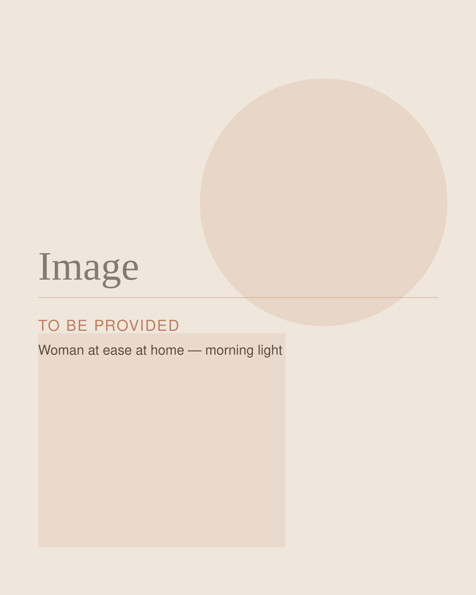

Wellness
Hormone Replacement Therapy With Isabelle Joseph, DNP, NP-BC
When You Don't Feel Like Yourself, It's Worth Asking Why.
Maybe your sleep has changed. Your energy isn't what it used to be. You're experiencing hot flashes, brain fog, mood changes, or changes in your libido. Or maybe you simply know that something feels different—even if you're having trouble putting your finger on exactly what it is.
Hormonal changes during perimenopause and menopause can affect many aspects of how you feel. Hormone replacement therapy (HRT) may be an option for appropriate patients experiencing bothersome symptoms associated with these changes.
With Isabelle Joseph, DNP, NP-BC, care starts by listening to what you're experiencing, evaluating your health and symptoms, and building a personalized plan based on you.

Overview
What Is Hormone Replacement Therapy?
Hormone replacement therapy is a medical treatment used to supplement hormones that decline or fluctuate during perimenopause and menopause.
Depending on your symptoms, health history, and individual needs, treatment may involve estrogen, progesterone, or, for some appropriately evaluated patients, testosterone. Estrogen therapy can be particularly effective for symptoms such as hot flashes and night sweats and may also play a role in supporting bone health and addressing certain genitourinary symptoms. For women with a uterus who use systemic estrogen, progesterone or another appropriate progestogen is generally used to help protect the uterine lining. Testosterone is not automatically appropriate for every patient experiencing fatigue, low libido, or changes in muscle mass, and treatment should be based on appropriate clinical evaluation.
Your treatment plan may include one hormone or a combination depending on your symptoms, medical history, anatomy, laboratory findings when appropriate, and treatment goals.
Could Your Symptoms Be Related to Hormonal Changes?
Perimenopause and menopause don't look exactly the same for every woman. Some symptoms are obvious. Others are easier to dismiss as stress, aging, lack of sleep, or simply having too much going on.
Hormonal changes may be associated with symptoms such as hot flashes, night sweats, difficulty sleeping, brain fog, changes in concentration, mood changes, changes in energy, changes in libido, vaginal dryness or discomfort, changes in body composition, and changes in muscle or bone health.
Experiencing one of these symptoms doesn't automatically mean hormones are the cause. That's why appropriate evaluation matters. Instead of guessing, Isabelle can help you look at your symptoms, health history, and other relevant information together.
Perimenopause vs. Menopause
You Don't Have to Wait Until Your Period Stops to Ask Questions.
Menopause is reached after 12 consecutive months without a menstrual period when there isn't another medical explanation. Perimenopause is the transition leading up to menopause. During this time, hormone levels can fluctuate and menstrual cycles may become irregular.
Symptoms can begin during perimenopause—sometimes years before the final menstrual period. That means you don't necessarily need to wait until you've officially reached menopause to discuss bothersome symptoms with a medical provider.
If something has changed and it's affecting your quality of life, it's worth having the conversation.
Who It May Be For
What Can HRT Help Address?
Hot Flashes + Night Sweats
Hot flashes and night sweats—known medically as vasomotor symptoms—are among the most recognizable symptoms associated with menopause. Hormone therapy is an effective treatment option for vasomotor symptoms in appropriately selected patients. Reducing these symptoms can also make a meaningful difference in sleep and everyday comfort.
Sleep
Hormonal changes and nighttime symptoms can make restful sleep more difficult. Understanding what is disrupting your sleep is an important part of determining whether hormone therapy or another approach may help.
Mood + Mental Clarity
Some women describe increased irritability, mood changes, difficulty concentrating, or a sense of “brain fog” during the menopausal transition. These symptoms can have multiple causes, but hormonal changes may be one piece of the picture.
Vaginal + Urinary Symptoms
Declining estrogen levels can contribute to vaginal dryness, discomfort with intimacy, and certain urinary symptoms. These concerns are common—and worth discussing. Depending on your symptoms, localized or systemic treatment options may be considered.
Bone Health
Estrogen plays an important role in maintaining bone density. The decline in estrogen associated with menopause can contribute to bone loss over time. Hormone therapy may provide bone-health benefits for appropriately selected patients.
Sexual Wellness
Changes in hormones can coincide with changes in libido, vaginal comfort, and sexual well-being. These concerns deserve the same thoughtful medical attention as any other symptom.
Options
Personalized HRT Options
Your Plan Should Fit Your Body—and Your Life.
Skin Clique's current women's HRT program offers several treatment approaches that can be individualized by the treating provider. Depending on your clinical needs, available options may include:
Progesterone
Progesterone-only treatment may be considered in certain situations based on symptoms and medical evaluation.
Estrogen + Progesterone
For appropriate patients, estrogen and progesterone may be used together. Skin Clique currently offers transdermal estrogen options including topical cream and patches.
Testosterone
Topical testosterone may be considered for selected patients when clinically appropriate.
Provider-Guided Prescriptions
Skin Clique also currently offers provider-guided hormone management in which prescriptions can be sent to a pharmacy selected by the patient.
The right option isn't determined by choosing a package first. Your provider evaluates your symptoms, history, labs when appropriate, and goals before determining a treatment plan. Medication options, formulations, availability, and program pricing can change. Current options should be confirmed through Isabelle and Skin Clique.
Isabelle's Approach to Hormone Health
Treat the Person—Not Just a Lab Number.
Hormone care shouldn't begin and end with a laboratory result.
Your symptoms matter. Your health history matters. Your age and stage of the menopausal transition matter. Your medications, personal risk factors, goals, and preferences matter. Laboratory testing may also provide important information depending on your individual situation.
Isabelle considers these pieces together to determine whether hormone replacement therapy may be appropriate and, if so, which treatment approach makes sense for you.
The goal isn't to chase a particular hormone number. It's to create an evidence-informed plan centered around your health and how you actually feel.
What to Expect
What to Expect
- Step 1
Tell Isabelle What You're Experiencing
Your care begins with your symptoms and health history. You'll discuss what's changed, how long you've noticed it, how those symptoms affect your life, your menstrual and reproductive history when relevant, medications, previous treatments, and your goals.
- Step 2
Clinical Evaluation + Labs
Isabelle will evaluate whether additional testing is appropriate. Skin Clique's current HRT program includes access to a comprehensive female hormone panel, and laboratory information may be used alongside symptoms and medical history to help guide care. Labs are one part of the picture—not the entire picture.
- Step 3
Personalized Treatment Plan
If HRT is appropriate, Isabelle will develop a plan based on your individual needs. That may include estrogen, progesterone, testosterone when appropriate, or another individualized approach. The formulation, route, and dose depend on your health and treatment plan.
- Step 4
Begin Treatment
Depending on the prescription selected, medication may be shipped directly to you or obtained from a local pharmacy. You'll receive instructions for using your medication appropriately.
- Step 5
Follow-Up + Optimization
Hormone therapy isn't “set it and forget it.” Your symptoms, response, side effects, health, and laboratory findings when appropriate should be reassessed over time. Isabelle can adjust your treatment plan when clinically indicated.
HRT Isn't One-Size-Fits-All
Route of Treatment Matters.
You may hear HRT discussed as though it is one medication. It isn't. Hormone therapy can involve different hormones, doses, formulations, and routes of administration.
For example, estrogen may be delivered through the skin using a patch or topical preparation rather than taken orally. Progesterone may be prescribed separately. Some patients may have different needs depending on whether they have a uterus, their symptoms, medical history, and individual risk factors.
This is one reason comparing your HRT prescription with a friend's treatment plan isn't particularly useful. The right plan is the one developed for you.
What Does “Bioidentical” HRT Mean?
The term “bioidentical” describes hormones that have the same molecular structure as hormones produced by the human body. It's important to know that “bioidentical” does not automatically mean compounded.
FDA-approved hormone medications—including certain forms of estradiol and micronized progesterone—can also be bioidentical. Compounded hormone preparations may be appropriate in certain circumstances, but they are not FDA-approved in the same way as commercially manufactured medications.
Isabelle can explain the available options and help you understand why a particular formulation may or may not make sense for you.

Care That Evolves With You
Hormone Care Should Be a Conversation, Not a Transaction.
Your symptoms can change. Your health can change. Your goals can change. And your hormone treatment may need to change with them.
Skin Clique's HRT program is built around a dedicated provider, personalized protocols, laboratory evaluation when appropriate, and ongoing optimization rather than a one-time prescription.
With Isabelle, you have a provider who can help you understand what's happening, evaluate how you're responding, and make thoughtful adjustments over time.
Is It Right for Me?
Is HRT Right for Me?
HRT may be worth discussing if you're experiencing bothersome symptoms associated with perimenopause or menopause. Potential candidates can include women experiencing symptoms such as:
- Hot flashes
- Night sweats
- Sleep disruption
- Vaginal or genitourinary symptoms
- Mood or cognitive changes during the menopausal transition
- Symptoms associated with premature ovarian insufficiency
- Symptoms following surgical menopause
Whether HRT is appropriate depends on your individual medical history and risk factors. For many healthy women experiencing bothersome menopausal symptoms—particularly those younger than 60 or within approximately 10 years of menopause onset—the balance of benefits and risks may be favorable. But there is no universal answer. The decision should be individualized between you and your medical provider.
What to Know
When HRT May Not Be Appropriate
Certain medical histories require additional caution, specialist involvement, or may make systemic hormone therapy inappropriate. Make sure Isabelle knows about any history of:
- Breast or other hormone-sensitive cancers
- Unexplained vaginal bleeding
- Blood clots or pulmonary embolism
- Stroke
- Heart attack or significant cardiovascular disease
- Liver disease
- Pregnancy or possibility of pregnancy
- Migraine history
- Gallbladder disease
- Other significant medical conditions
- Current prescription medications and supplements
This is not a complete screening list. Some conditions do not automatically rule out every form of hormone therapy, but they can affect which treatments are appropriate. Your medical history should be reviewed before treatment begins.
Frequently Asked Questions
Hormone Replacement Therapy Frequently Asked Questions
Have a question you don't see here? Bring it to your consultation, or browse the full FAQ page.
Is HRT safe?
HRT has potential benefits and risks. For many healthy women who begin treatment for bothersome menopausal symptoms before age 60 or within approximately 10 years of menopause onset, current evidence supports a favorable benefit-risk profile. Your personal medical history can significantly change that assessment. That's why HRT should be prescribed based on an individualized medical evaluation rather than a universal rule.
Do I need hormone labs before starting HRT?
Not every menopausal symptom requires hormone testing to establish that menopause is occurring, particularly in women with a typical clinical presentation. However, laboratory testing may be useful in certain situations and can help guide aspects of individualized treatment. Skin Clique's program includes lab options, and Isabelle can determine which testing is appropriate for you.
Can I start HRT during perimenopause?
Potentially, yes. You don't necessarily need to wait until you've gone 12 months without a period to discuss hormone therapy. Treatment decisions during perimenopause depend on your symptoms, health history, menstrual pattern, contraception needs, and other individual factors.
How quickly will I feel different?
It depends on the symptom, medication, dose, and individual patient. Some symptoms may begin improving within weeks, while others can take longer. Your response should be monitored over time rather than judged after only a few days.
Will HRT help me lose weight?
HRT is not a weight-loss medication. Hormonal changes during menopause can affect body composition and fat distribution, but hormone therapy should not be prescribed solely as a weight-loss treatment. If weight management is one of your concerns, Isabelle can help determine whether a separate evaluation or GLP-1 weight-management approach may be appropriate.
Does HRT cause breast cancer?
The relationship between hormone therapy and breast cancer risk is complex and depends on factors including the type of hormone therapy, duration of use, individual risk factors, and medical history. It isn't accurate to describe all HRT as having one universal level of risk. Isabelle will review your personal and family history and discuss how the potential benefits and risks apply to you.
Do I have to stop HRT after five years?
There isn't a universal five-year stopping rule. How long someone remains on HRT should be individualized based on symptoms, treatment benefits, risks, age, health, and personal preferences. The decision should be revisited periodically with your medical provider.
What's the difference between a patch and a cream?
Both can deliver hormones through the skin. The medication, dose, absorption, application schedule, convenience, and individual clinical considerations may differ. Isabelle can help determine which available delivery method best fits your treatment plan.
Will I need progesterone?
If you have a uterus and use systemic estrogen, progesterone or another appropriate progestogen is generally needed to protect the uterine lining. Individual situations can differ, so your prescription should be determined by your medical provider.
What about testosterone for women?
Testosterone therapy may be considered for selected women after appropriate evaluation, particularly for certain sexual-health concerns. It isn't an automatic treatment for every symptom associated with menopause. Potential benefits, side effects, monitoring, and the limitations of available formulations should be discussed with Isabelle before treatment.
Can HRT help with vaginal dryness?
Yes, hormone-based treatments can be effective for genitourinary symptoms associated with menopause, including vaginal dryness and discomfort. For some patients, localized vaginal estrogen or other therapies may be appropriate rather than—or in addition to—systemic HRT. Your symptoms and medical history help determine the appropriate approach.
HRT + Weight Management
Hormonal changes and weight changes can occur during the same stage of life, but that doesn't mean every change in weight is caused by hormones. Sleep, muscle mass, activity, nutrition, medications, aging, and metabolic health can all play a role.
If weight management is also a concern, Isabelle can help you look at the bigger picture rather than assuming one treatment will solve every symptom. For appropriate patients, HRT and medically supervised weight-management care may address different needs within a broader wellness plan.
HRT + Hair Changes
Hormonal transitions can also coincide with changes in hair density, shedding, or texture. Hair loss has many possible causes, so changes shouldn't automatically be attributed to menopause.
If you've noticed increased shedding or thinning, Isabelle can help determine whether a separate hair-loss evaluation and treatment plan may be appropriate.
Ready to Feel More Like Yourself?
You don't need to know whether you need estrogen, progesterone, testosterone—or hormone therapy at all—before reaching out. Start with what you're experiencing.
Isabelle can help you understand your symptoms, review your options, and determine whether hormone replacement therapy may be appropriate for you.
Start Your HRT Journey With Isabelle
Personalized, lab-guided hormone care with ongoing support from Isabelle Joseph, DNP, NP-BC.